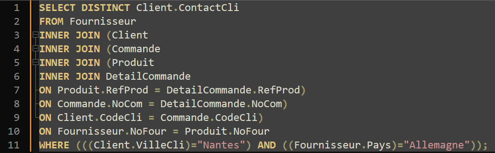

Analyses des bases de données de KDou
En modifiant la feuille Excel on crée un tableau qu’on vient ensuite trier en fonction des questions posées ou faire des recherches dans les colonnes. La mission 1 est plus centrée sur l'exploration et la modification d’une base de données, certaines questions nous demandaient de compter le nombre de clients par exemple. Pour chaque question je transforme la feuille Excel en tableau si ce n’est pas déjà fait ensuite pour les questions de dénombrage de client je fais un Crtl+F sur “nantes” par exemple, pour avoir les clients nantais ou un autre Crtl+F pour trouver le client demandé.
Dans la notre 2 ème mission on découvre le QBE. Ce tableau est très efficace pour faire les commandes basiques, pour des commandes plus évolué il faut comprendre les subtilitée du QBL pour savoir comment l’utiliser D’abord, on doit étudier les tables de la base de données et comprendre comment elles sont reliées. En gros, ça veut dire qu’on doit bien saisir ce que contient chaque table et quels liens existent entre elles. Ensuite, on utilise l’interface QBE (Query By Example), qui nous permet de créer des requêtes SQL de façon graphique. L’avantage, c’est qu’on peut chercher des informations sans taper de code directement : Access génère le code SQL pour nous. À travers cette mission, on apprend à poser les bonnes questions pour obtenir les infos qu’on cherche, comme par exemple :
En résumé, cette mission nous aide à bien comprendre la base de données pour en extraire des informations pertinentes, en avançant progressivement avec des requêtes SQL simples.
L’objectif de cette troisième mission est pour nous d’apprendre à exploiter la base de données de l’entreprise KDou pour produire des analyses et des indicateurs précis en SQL. Tout d’abord, on doit lire attentivement les questions posées pour bien comprendre les informations qu’on nous demande d’extraire. Ensuite, on examine les données pour interpréter ces demandes dans le contexte de KDou. Pour chaque question, on cherche une ou plusieurs façons d’interpréter et d’afficher les informations, en choisissant les éléments les plus pertinents pour répondre aux besoins de l’entreprise. En plus, chacun d’entre nous propose une requête SQL originale en lien avec les priorités de KDou (comme le respect de l’environnement ou l’optimisation de l’offre), pour aider l’entreprise dans sa stratégie. Au final, cette mission nous aide à aller plus loin dans notre utilisation de SQL et à extraire des analyses plus complexes et personnalisées pour répondre aux besoins de KDou.
